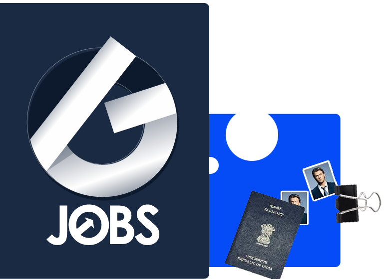

<ion-app>
  <ion-split-pane contentId="main-content">
    <ion-menu contentId="main-content" type="overlay">
      <ion-content>
        <ion-list id="inbox-list">
          <ion-list-header>
            
          </ion-list-header>
          <ion-note class="color-blue center">
            <small><em>Design & Developed by</em> <strong> @w3earth</strong></small>
          </ion-note>

          <ion-menu-toggle auto-hide="false" *ngFor="let p of appPages; let i = index">
            <ion-item routerDirection="root" [routerLink]="[p.url]" lines="none" detail="false"
              routerLinkActive="selected" [routerLinkActiveOptions]="{exact: true}">
              <ion-icon slot="start" [ios]="p.icon + '-outline'" [md]="p.icon + '-sharp'"></ion-icon>
              <ion-label>{{ p.title }}</ion-label>
            </ion-item>
          </ion-menu-toggle>
        </ion-list>

        <ion-list id="labels-list">
          <ion-list-header>Labels</ion-list-header>

          <ion-item *ngFor="let label of labels" lines="none" color="light">
            <ion-icon slot="start" ios="bookmark-outline" md="bookmark-sharp"></ion-icon>
            <ion-label>{{ label }}</ion-label>
          </ion-item>
        </ion-list>
      </ion-content>

      <!-- Footer without a border -->
      <ion-footer class="ion-no-border">
        <ion-toolbar>
          <ion-text class="center">Copyright reserved by w3earth</ion-text>
        </ion-toolbar>
      </ion-footer>

    </ion-menu>
    <ion-router-outlet id="main-content"></ion-router-outlet>
  </ion-split-pane>
</ion-app>